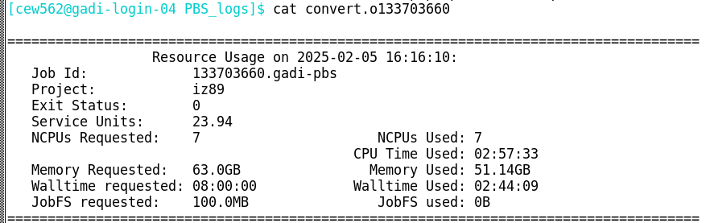
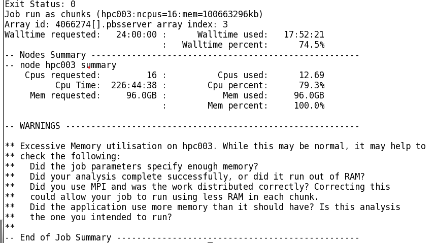
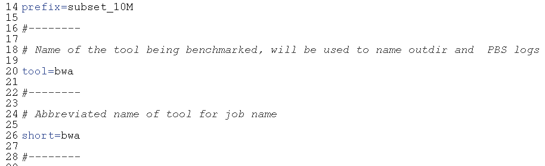
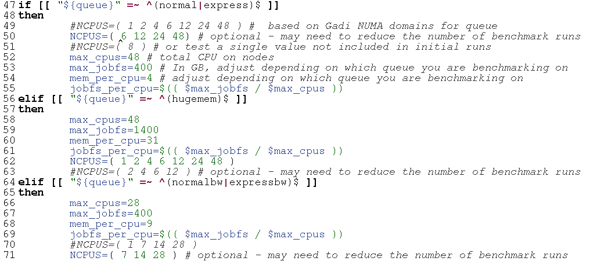
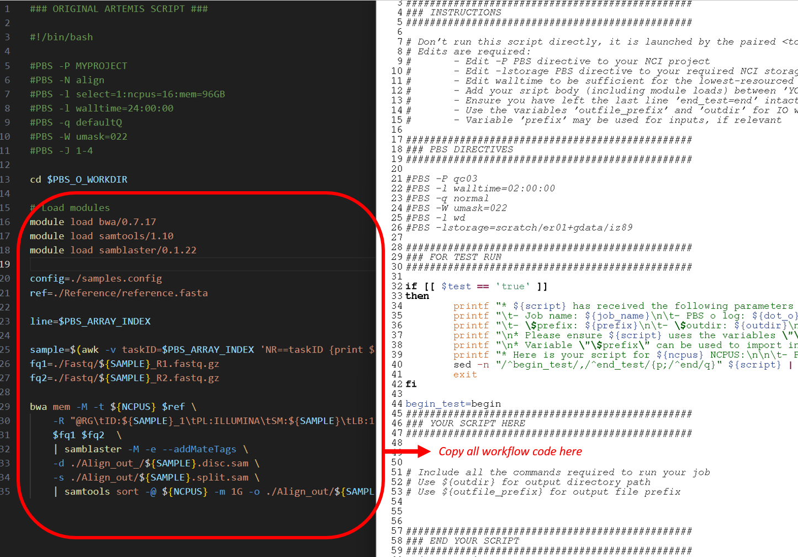
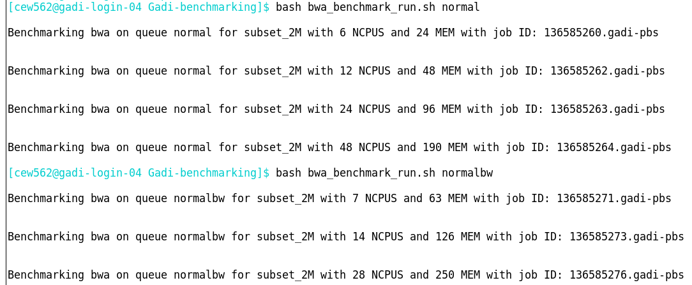
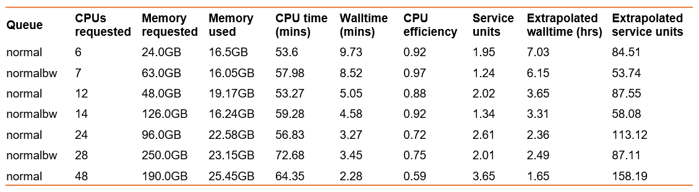
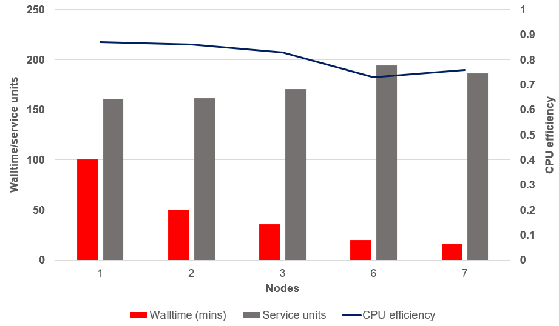

Optimising and benchmarking your job
Introduction
In this section, we will consider job optimisation and benchmarking for compute resource usage efficiency.
Watch the pre-recorded session
The main challenges users may face adapting Artemis workflows to Gadi are:
- Gadi walltime limit of 48 hours
- Adjusting PBS directives to suit Gadi requirements and queue structure
- Lack of internet access for Gadi compute nodes
- Data transfer
- Understanding NCI accounting of KSU, disk and iNode limits
- Automatic 100-day Gadi /scratch purge policy
- Software installation and version upgrades on Gadi
- Job arrays not supported on Gadi
In this section, we will broadly address the first two challenges on this list, exploring how optimising your workload through splitting/checkpointing jobs and optimising compute resource requests for Gadi queues can help minimise your walltime and use less KSU.
For the remaining challenges, please visit the specific linked content. We will run training sessions on some of these during the lead up to the Artemis decommission date.
What is workflow optimisation
In short, to optimise a workflow or code is to make it faster and more efficient. This can be achieved through a number of practices:
- Efficient resource allocation
- Selecting the right number of CPUs, memory and queue for the job
- Avoiding overallocation (wasting resources) or underallocation (causing slow performance)
- Parallelisation and scaling
- Splitting/checkpointing jobs into numerous smaller jobs to enable parallel computing and job resume
- Balancing workload distribution to avoid bottlenecks caused when some cores are idle while others are overloaded
- I/O optimisation
- Selecting the right filesystem for I/O, for example using compute node SSD for temp files
- Using efficient file formats
- Avoiding excessive small file creation to prevent inode exhaustion
- Memory management
- Ensuring a job fits within allocated RAM to avoid swapping to disk
- Using efficient data structures to reduce memory footprint
- Software and algorithm optimisation
- Choosing the best algorithm for the task
- Using binaries compiled on Gadi and optimised libraries
- Enabling hardware acceleration with GPU where possible
Optimisation is crucial in HPC because it facilitates faster, more efficient, and cost-effective execution of computational workload. As researchers we want fast results but it is also our moral imperative to minimise our carbon footprint while using HPC. We also have a shared responsibility to other users of the system to make efficient use of the resources we reserve for our jobs, and to The University of Sydney, which funds 100% of our compute with NCI.
In this section, we will look at one simple approach to optimisation through compute resource benchmarking as a quickstart way of adapting your Artemis workflows to Gadi and selecting the right CPU, mem and queue for your Gadi job. In order to optimise in other ways, for example testing different file formats, I/O filesystems, algorithm types, GPUs, etc, a similar systematic approach could be followed: run the same analysis with the relevant differences, and compare the job performance.
There are complex job tracing tools for fine-tuned code optimisation; we will not be covering these, instead focusing on an overall picture of CPU and memory efficiency to guide appropriate resource selection.
Compute resource benchmarking vs scientific benchmarking
Please note that this section covers compute resource benchmarking and not scientific benchmarking. While compute resource benchmarking focuses on execution speed and efficiency, scientific benchmarking focuses on whether computational results are correct, reproducible, and scientifically valid. Scientific benchmarking is extremely important, but not the focus of this training. Please do undertake scientific benchmarking, but understand that it is not covered within this section. It may be that changing job parameters can also influence the optimum resources required, such that once you have selected the right resources based on benchmarking for one set of parameters, you may need to re-run compute benchmarking for a different set of parameters. This may sound tedious, however if you typically run the same types of analyses frequently, the compute benchmarking you perform can save you both time (walltime, queue time, avoiding job failures from exceeding resources) and SU in the long run.
In this section we will focus on selecting the right queue on Gadi, along with the CPU and memory that provides the best trade-off between walltime, CPU efficiency and memory efficiency. By optimising these aspects, we can also indirectly minimise our queue time, as an efficient job is generally a job with a shorter walltime and shorter walltimes contribute to shorter queue times.
CPU and memory efficiency
Efficiency can refer to CPU efficiency or memory efficiency.
CPU efficiency can be calculated with the formula:
cpu_e = cputime / (walltime X cpus_used)A CPU efficiency value of 1 indicates perfect CPU utilisation for the duration of the job. This is often achieved for single-core jobs, however typically, as a tool or code is run with multiple threads or at scale across multiple nodes, the CPU efficiency declines. Aim to maintain your workflows above 80% where possible.
NCI monitors CPU utilisation and repeated execution of jobs with very poor CPU efficiency may be met with an email from the NCI technical team.
A job with extremely low CPU efficiency may be permissible if it has high memory efficiency. Memory efficiency can be calculated with the formula:
mem_e = max_mem_used / mem_requestedBelow is a Gadi job log. All the details required to calculate CPU and memory efficiency are contained within this log:

Challenge: calculate CPU efficiency
From the above job log, use the formula cpu_e = cputime / (walltime X cpus_used) to calculate this job’s CPU efficiency.
Do you think this job efficiently utilised CPU?
The below answer converts CPU time and walltime to minutes. The same result is achieved if you use hours or seconds, as long as you use the same unit across both values.
cpu_e = cputime / (walltime X cpus_used)
cpu_e = 177.55 / (164.15 X 7)
cpu_e = 0.15This job did not make efficient use of the requested 7 CPU.
Challenge: calculate memory efficiency
From the above job log, use the formula mem_e = max_mem_used / mem_requested to calculate this job’s memory efficiency.
Do you think this job efficiently utilised memory?
mem_e = max_mem_used / mem_requested
mem_e = 51.14 / 63
mem_e = 0.81This job did make efficient use of the requested 63 GB memory.
Reflecting on the efficiencies calculated for this example job, would you consider this job to have requested appropriate resources on Gadi?
Perfect utilisation of all 7 CPUs would result in a CPU efficiency of 1.0. If only one CPU were used with perfect efficiency, its individual contribution would be 1/7 ≈ 0.14. This job had a CPU efficiency of 0.15. This suggests that the job was a single core job with a high memory requirement. If this job requested only 1 CPU and the same 63 GB memory, the CPU efficiency calculation from the job log would be close to perfect! However, the memory efficiency and total SU charge would have remained identical.
Why would the user have requested 7 CPU over 1 CPU for a single-core job? By requesting 7 CPU, they have been protective of the resources they have partitioned for their job. If a request of 1 CPU and 63 GB memory was made, other users may have been able to utilise those other 6 CPU, but only if there was sufficient memory remaining on that node. Some jobs benefit from reserving extra CPUs even if they do not use them, such as memory-intensive jobs that prevent other users from overloading the node.
Now that we have an understanding of CPU efficiency, memory efficiency, and how to calculate them, we have a means of directly comparing replicate runs of the same analysis task with differing compute resources.
Benchmarking CPU, memory and queue on Gadi
Compared to Artemis, Gadi has newer hardware, newer software, and more diverse queue options. A burning question from Artemis users newly migrating to Gadi is how do I know what resources to request for my job?
If you have a fair idea of what resources your job required on Artemis and for how long, you can request similar resources on the relevant queue on Gadi, with the expectation that your job will execute more quickly due to the newer hardware and software. Whether you have this prior knowledge or not, it is worthwhile to perform benchmarking on Gadi.
Example Artemis usage log
Consider the below job log from Artemis:

This is a fairly long-running job with high CPU and memory utilisation. We could run this job with reasonable confidence on Gadi by applying the same resource requests:
#PBS -P MYPROJECT
#PBS -l walltime=24:00:00
#PBS -l ncpus=16
#PBS -l mem=96GB
#PBS -q normalYet this requests a CPU:mem ratio of 16:96 = 6, which as we have learnt from the section on accounting is higher than the CPU:mem ratio on the normal queue of 4, so our job would be charged double per resource hour.
How else could we structure this to ensure sufficient CPU, memory, and minimise SU?
- 16 CPU with 4 GB RAM per CPU on the
normalqueue, total memory request of 64 GB. Would this be sufficient, or would the job die due to inadequate memory? Memory utilisation on Artemis was 100% at 96 GB - 16 CPU with 9 GB RAM per CPU on the
normalbwqueue. We would have plenty of memory at 144 GB, and a low charge rate of 1.25, but how much slower would our job be on the older Broadwell nodes? - 24 CPU with 4 GB RAM per CPU on the
normalqueue. We would have the same amount of memory as the Artemis job, but with more CPU. Would the walltime be faster due to this extra CPU, or would it take the same walltime and thus have a lower CPU efficiency?
These are the questions that we can answer with simple compute resource benchmarking. In this example, we have a good starting point about the amount of resources the job requires. We can test different queues and different CPU and memory combinations that are around these values to obtain the most efficient values, ie those that are the best trade-off between walltime, SU, and efficiency.
Benchmarking template scripts
To make this process easier, SIH have a repository of Gadi template benchmarking scripts. This repository contains a pair of scripts designed to test single runs of a command/tool at various CPU and memory settings on different queues. It does require some modification (and carefully use and follow the guide!) to set it up, but once you know how to use this template, it can expedite testing chunks of your workflow to obtain the most efficient (ie optimised) queue and resource requests for the task. Running the gadi_usage_report.pl script from this repository will summarise the resources used by the benchmark jobs into a table that can be viewed or plotted to determine best resources.
It is not critical to use this template, but it can be a helpful tool if you have not benchmarked before, or if you benchmark multiple tools/code chunks regularly and want a simple and replicable method.
Tips for benchmarking
- Test individual parts of your code where possible - ie one command, one tool, one chunk of code
- This enables you to determine which parts of your workflow have differing compute requirements
- Parts with differing compute requirements can be allocated to different queues and resources, saving you KSU
- Do initial benchmarking on a small subset of your data - ie subsample, reduce sample numbers, reduce permutations, etc
- Follow up with scalability testing: Once you have refined the candidate best resources, re-run the benchmark on a representative subset (ie whole sample, more iterations) and compare the CPU efficiency
- Is it as good as the initial test benchmark in terms of CPU and memory efficiency?
- If so, then go ahead and apply this setting to your full run
- If not, re-run full benchmarks with the larger test dataset, or dig deeper into what is causing the loss of efficiency at scale
- Embrace the labour of benchmarking!
- While it may seem like a time-consuming impediment to getting on with analysing your data, it can save you a lot of time and KSU down the track
- Benchmarking will make your analysis faster and use less USyd-funded resources and energy resources
- Benchmarking can prevent avoidable job failures such as a job running out of walltime or memory, which will cost more time and resources to resubmit
Demo benchmarking activity using the template
The example Artemis usage log shown above ran the tool bwa-mem to map DNA sequences to a reference sequence. When benchmarking, apply your domain knowledge to determine how to best subset the data to make small test datasets that can provide benchmark results quickly and with low SU cost. For this example, each query string within the input DNA file is mapped independently, so we can simply take a short subset of the file and map that to the reference.
When subsetting, it’s important to finish off benchmarking by completing one full (not subset) run at the best chosen compute resources, to ensure that the benchmark results are consistent when a large input is provided.
It is also important to take a meaningful subset. The minimum size may not always be the best; aim to have your jobs run for at least 5 minutes. Starting a job and its various processes has an overhead, and making the subset data too small can cause the compute resource usage summary to be affected by these background processes. For this example, the full input was 433.4 million queries. For a target run time of 5 minutes, this equates to approximately 2 million queries. However, I am so optimistic about the execution speed on Gadi that I will hazard a guess that 2 million queries will be too fast for a decent preliminary benchmark run and we should use 10 million :-)
After subsetting the raw data to the target 2 million entries, next set up the template benchmarking scripts. Working on Gadi, make a directory for the tool to be benchmarked, clone the repository, and rename the scripts
cd /scratch/<nci-project-id>
mkdir benchmark-bwa
cd benchmark-bwa/
git clone git@github.com:Sydney-Informatics-Hub/Gadi-benchmarking.git
cd Gadi-benchmarking/
mv tool_benchmark_run.sh bwa_benchmark_run.sh
mv tool_benchmark.pbs bwa_benchmark.pbs Next, edit bwa_benchmark_run.sh which is a wrapper script to launch multiple PBS jobs for the same compute task at different resources. Update the run prefix, tool name and tool short name:

Then, review the pre-set queue variables, and determine which CPU values you want to run on. For this case we are interested in the normal and normalbw queues, as the CPU:mem ratio on hugemem does not seem warranted by our prior runs on Artemis. It’s unlikely that the job will run on low CPU values, given the mem usage of 96 GB on Artemis, so adapt the NCPUS arrays for the normal and normalbw code chunks to exclude 1, 2 and 4 CPU for normal and 1 CPU for normalbw:

Then, add the workflow code from the original script to the benchmarking template script named bwa_benchmark.pbs, ensuring to adhere to the output path and prefix requirements described in the comments. Also add your NCI project code at #PBS -P and update the lstorage paths as required for your input data:

Make sure to check for the required software on Gadi. See software for options when your tools/versions aren’t globally installed on Gadi.
After making the required changes to this script, the completed bwa_benchmark.pbs workflow section appears as below. Note the use of ${ncpus} for the BWA and samtools thread parameter values, and the use of ${outdir} and ${outfile_prefix} to name the outputs. These are specified within the run script, and are set up so you can run multiple benchmarks simultaneously without I/O clashes. Also note the slight adjustment to module versions and input file paths, as well as the lack of job array here compared to the Artemis script:
################################################
### YOUR SCRIPT HERE
################################################
# Include all the commands required to run your job
# Use ${outdir} for output directory path
# Use ${outfile_prefix} for output file prefix
# Load modules
module load bwa/0.7.17
module load samtools/1.19
module load samblaster/0.1.24
ref=./inputs/Reference/hs38DH.fasta
SAMPLE=subset_10M
fq1=./inputs/${SAMPLE}_R1.fastq.gz
fq2=./inputs/${SAMPLE}_R2.fastq.gz
bwa mem -M -t ${ncpus} $ref \
-R "@RG\tID:${SAMPLE}_1\tPL:ILLUMINA\tSM:${SAMPLE}\tLB:1\tCN:KCCG" \
$fq1 $fq2 \
| samblaster -M -e --addMateTags \
-d ${outdir}/${outfile_prefix}.disc.sam \
-s ${outdir}/${outfile_prefix}.split.sam \
| samtools sort -@ ${ncpus} -m 1G -o ${outdir}/${outfile_prefix}.dedup.sort.bam -
################################################
### END YOUR SCRIPT
################################################Save, then launch the set of benchmarks on the normal queue and the normalbw queue:
bash bwa_benchmark_run.sh normal
bash bwa_benchmark_run.sh normalbwThis has submitted 7 identical compute tasks with different CPU, memory and queue resources:

Monitor with qstat, then when all jobs have completed, check the usage summary with the SIH Gadi job usage reporting tool:
cd PBS_logs/bwa/
perl gadi_usage_report_v1.1.plThis provides comprehensive job reporting metrics which can be copied to Excel for plotting or review. Extracting a few key columns from the table, and extrapolating walltime and SU to the full-sized sample:

Which resources would you choose when porting this Artemis job to Gadi?
- Fastest walltime? 48 CPU on normal queue, but this comes with the lowest CPU efficiency and highest SU charge, which could really add up for multiple full-size samples
- Least service units? 7 CPU on normal Broadwell queue, this also has the best CPU efficiency of 97% but the second slowest walltime
- Trade-off between efficiency, walltime, and SU? That could be 14 CPU on the normalbw queue, which nicely fits 2 samples per node enabling a good fit for a multi-node parallel job when all samples are analysed
Of note, these benchmarks show a much lower memory usage than the Artemis job. Artemis takes a snapshot of memory usage to report in the log, and it may be that a surge in memory usage was recorded, and that the method in which NCI captures memory use for log reporting differs. This even further highlights the need to benchmark on Gadi, as a job that may appear to require high memory or walltime on Artemis may be sufficiently run with far less on Gadi.
Likewise, the extrapolated walltime for a full-size sample is also much lower than Artemis. We expect faster execution on Gadi, however this difference (2-7 hours vs 18 hours!) is greater than expected. There may have been some other inefficiencies within the tool versions or perhaps scratch disk contention at the time the job was run on Artemis. This clearly underpins the need to benchmark on the platform you plan to use and also, that the small-scale benchmarks should be followed up with a full-size run where possible.
Benchmarking at scale
We are fortunate under the Sydney Scheme to have easy access to generous KSU. Prior to this scheme, NCI users would need to apply for merit-based allocations under Sydney Scheme or NCMAS. NCMAS is highly prestigious and competitive, and applications are required to not only provide benchmarking results, but also to demonstrate scalability by showing that CPU and/or memory efficiency is maintained when the workflow is scaled to multi-node jobs.
We typically see some decline in efficiency at scale. The figure below shows a scalability study using the same command as above, on one full-sized sample, running multiple 10 million query chunks in parallel with 6 CPU per task (best efficiency from the benchmark results above). Using this scatter-gather parallelism approach, multiple nodes per sample can be utilised (not something the tool can do natively), making great use of Gadi’s extensive infrastructure.
For a job with perfect scalability, we would see the walltime decrease as the number of nodes increased, while the SU and CPU efficiency remained constant. The job below does not demonstrate perfect scalability, as so few do. As expected, we can see a decrease in walltime as more nodes are assigned to this job, and a slight increase in SU and worsening of CPU efficiency. It appears the ‘sweet spot’ is around 3 nodes per sample for this analysis, where the CPU efficiency remains > 80% and a fair compromise between walltime and SU is observed.

Benchmarking the best algorithm for the task
Often, there are multiple tools or algorithms we could choose from to perform a computational task. These may produce identical or sufficiently equivalent results, in which case we would not need to consider scientific benchmarking to decide between the two. In these cases, we may rely on computational benchmarks to dictate our choices. For high computational workloads, the walltime and SU savings obtained by using a computationally efficient tool that is “almost as good” as its gold standard counterpart are well justifiable when reporting methods and results. If however you are only performing the analysis once or a small number of times, the deciding factor on tool choice should be scientific performance, not computational.
To compare two tools for the same task, you could use the benchmarking template scripts described above. You would simply take two copies of the template scripts, and run separately for each tool. The scripts have variables for tool name and tool abbreviated name, so you could run the benchmarking within the same directory without filename contention. The compute usage and efficiency metrics across both tools could be compared, and combined with scientific benchmarking to make an informed choice of tool.
Summary
- Compute resource benchmarking can help you save time (walltime, queue time, failed job time) and SU
- Use Artemis job usage logs you have for your favourite workflows as a starting point for resources
- Benchmark on a range of CPU, memory and queue setups on Gadi
- You may use the SIH Gadi benchmarking template scripts to help you get started with benchmarking
- Benchmark on a small representative subset of data, and then test at scale. Review and revise resources as you go
- Apart from CPU, memory, and queue, there are other important factors to benchmark as relevant to your work, including parallelisation, I/O, data structures, software/tool choice, and scientific benchmarking